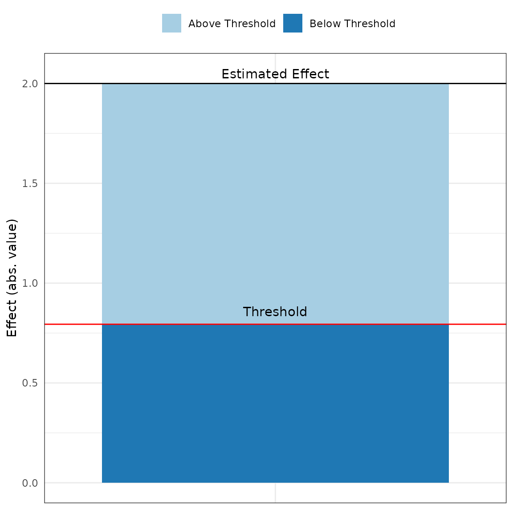

Introduction to konfound
Joshua Rosenberg, Ran Xu, Qinyun Lin, and Ken Frank
2024-08-31
Source:vignettes/introduction-to-konfound.Rmd
introduction-to-konfound.RmdIntroduction
The goal of konfound is to carry out sensitivity
analysis to help analysts to quantify how robust inferences are to
potential sources of bias. This package provides functions based on
developments in sensitivity analysis by Frank and colleagues, which
previously have been implemented in Stata, through an Excel
spreadsheet, and in R through the konfound
package. In particular, we provide functions for analyses carried
out outside of R as well as from models (lm,
glm, and lme4::lmer fit in R) for:
- Quantifying the bias necessary to nullify an inference from the framework of Rubin’s (1974) causal model using the Robustness of Inference to Replacement (RIR)
- The robustness of causal inference in terms of the impact threshold of a confounding variable (ITCV)
Install konfound with the following:
install.packages("konfound")Load konfound with the library() function:
library(konfound)
#> Sensitivity analysis as described in Frank,
#> Maroulis, Duong, and Kelcey (2013) and in
#> Frank (2000).
#> For more information visit http://konfound-it.com.Use of pkonfound() for values from an already-conducted analysis
pkonfound() is applied to an already-conducted analysis
(like a regression analysis), such as one in an already-published study
or from an analysis carried out using other software.
In the case of a regression analysis, values from the analysis would
simply be used as the inputs to the pkonfound() function.
In the example below, we simply enter the values for the estimated
effect (an unstandardardized beta coefficient) (2), its
standard error (.4), the sample size (100),
and the number of covariates (3):
pkonfound(est_eff = 2, std_err = .4, n_obs = 100, n_covariates = 3)
#> Robustness of Inference to Replacement (RIR):
#> RIR = 60
#>
#> To invalidate the inference of an effect using the threshold of 0.794 for
#> statistical significance (with null hypothesis = 0 and alpha = 0.05), 60.295%
#> of the (2) estimate would have to be due to bias. This implies that to
#> invalidate the inference one would expect to have to replace 60 (60.295%)
#> observations with data points for which the effect is 0 (RIR = 60).
#>
#> See Frank et al. (2013) for a description of the method.
#>
#> Citation: Frank, K.A., Maroulis, S., Duong, M., and Kelcey, B. (2013).
#> What would it take to change an inference?
#> Using Rubin's causal model to interpret the robustness of causal inferences.
#> Education, Evaluation and Policy Analysis, 35 437-460.
#>
#> Accuracy of results increases with the number of decimals reported.
#> For other forms of output, run
#> ?pkonfound and inspect the to_return argument
#> For models fit in R, consider use of konfound().For the same example, one can also ask for the impact threshold of a
confounding variable (ITCV) to nullify the inference, by specifying
index as IT.
pkonfound(est_eff = 2, std_err = .4, n_obs = 100, n_covariates = 3, index = "IT")
#> Impact Threshold for a Confounding Variable (ITCV):
#>
#> The minimum impact of an omitted variable to invalidate an inference for
#> a null hypothesis of an effect of nu (0) is based on a correlation of 0.566
#> with the outcome and 0.566 with the predictor of interest (conditioning
#> on all observed covariates in the model; signs are interchangeable). This is
#> based on a threshold effect of 0.2 for statistical significance (alpha = 0.05).
#>
#> Correspondingly the impact of an omitted variable (as defined in Frank 2000) must be
#> 0.566 X 0.566 = 0.321 to invalidate an inference for a null hypothesis of an effect of nu (0).
#>
#> For calculation of unconditional ITCV using pkonfound(), additionally include
#> the R2, sdx, and sdy as input, and request raw output.
#>
#> See Frank (2000) for a description of the method.
#>
#> Citation:
#> Frank, K. (2000). Impact of a confounding variable on the inference of a
#> regression coefficient. Sociological Methods and Research, 29 (2), 147-194
#>
#> Accuracy of results increases with the number of decimals reported.
#>
#> The ITCV analysis was originally derived for OLS standard errors. If the
#> standard errors reported in the table were not based on OLS, some caution
#> should be used to interpret the ITCV.
#> For other forms of output, run
#> ?pkonfound and inspect the to_return argument
#> For models fit in R, consider use of konfound().We notice that the output includes a message that says we can view
other forms of output by changing the to_return argument.
Here are the two plots - for the bias necessary to alter an inference
(thresh_plot) and for the robustness of an inference in
terms of the impact of a confounding variable (corr_plot)
that can be returned:
pkonfound(est_eff = 2, std_err = .4, n_obs = 100, n_covariates = 3, to_return = "thresh_plot")
pkonfound(est_eff = 2, std_err = .4, n_obs = 100, n_covariates = 3, to_return = "corr_plot")
Finally, you can return the raw output, for use in other analyses.
pkonfound(est_eff = 2, std_err = .4, n_obs = 100, n_covariates = 3, to_return = "raw_output")
#> For interpretation, check out to_return = 'print'.
#> $obs_r
#> [1] 0.4564355
#>
#> $act_r
#> [1] 0.4564355
#>
#> $critical_r
#> [1] 0.1995845
#>
#> $r_final
#> [1] 0.1995845
#>
#> $rxcvGz
#> [1] 0.5664778
#>
#> $rycvGz
#> [1] 0.5664778
#>
#> $itcvGz
#> [1] 0.320897
#>
#> $beta_threshold
#> [1] 0.7941004
#>
#> $beta_threshold_verify
#> [1] 0.7941004
#>
#> $perc_bias_to_change
#> [1] 60.29498
#>
#> $RIR_primary
#> [1] 60
#>
#> $RIR_perc
#> [1] 60.29498
#>
#> $Fig_ITCV
#>
#> $Fig_RIRThe pkonfound() command can be used with the values from
a two-by-two table associated with an intervention (represented as a
dichotomous predictor variable) that is related to a binary outcome,
such as one that could be modeled using a logistic regression.
Below:
-
arepresents an unsuccessful control group outcome -
brepresents a successful control group outcome -
crepresents an unsuccessful treatment group outcome -
drepresents a successful treatment group outcome
pkonfound(a = 35, b = 17, c = 17, d = 38)
#> Robustness of Inference to Replacement (RIR):
#> RIR = 14
#>
#> This function calculates the number of data points that would have to be replaced with
#> zero effect data points (RIR) to invalidate an inference made about the association
#> between the rows and columns in a 2x2 table.
#> One can also interpret this as switches (Fragility) from one cell to another, such as from the
#> treatment success cell to the treatment failure cell.
#>
#> To invalidate the inference, one would need to replace 14 treatment success data points with data points
#> for which the probability of failure in the control group applies (RIR = 14).
#> This is equivalent to transferring 9 data points from treatment success to treatment failure (Fragility = 9).
#>
#> For the User-entered Table, the estimated odds ratio is 4.530, with p-value of 0.000:
#> User-entered Table:
#> Fail Success Success_Rate
#> Control 35 17 32.69%
#> Treatment 17 38 69.09%
#> Total 52 55 51.40%
#>
#> For the Transfer Table, the estimated odds ratio is 2.278, with p-value of 0.051:
#> Transfer Table:
#> Fail Success Success_Rate
#> Control 35 17 32.69%
#> Treatment 26 29 52.73%
#> Total 61 46 42.99%
#> For other forms of output, run
#> ?pkonfound and inspect the to_return argument
#> For models fit in R, consider use of konfound().A table can also be passed to this function:
my_table <- tibble::tribble(
~unsuccess, ~success,
35, 17,
17, 38,
)
pkonfound(two_by_two_table = my_table)
#> Robustness of Inference to Replacement (RIR):
#> RIR = 14
#>
#> This function calculates the number of data points that would have to be replaced with
#> zero effect data points (RIR) to invalidate an inference made about the association
#> between the rows and columns in a 2x2 table.
#> One can also interpret this as switches (Fragility) from one cell to another, such as from the
#> treatment success cell to the treatment failure cell.
#>
#> To invalidate the inference, one would need to replace 14 treatment success data points with data points
#> for which the probability of failure in the control group applies (RIR = 14).
#> This is equivalent to transferring 9 data points from treatment success to treatment failure (Fragility = 9).
#>
#> For the User-entered Table, the estimated odds ratio is 4.530, with p-value of 0.000:
#> User-entered Table:
#> Fail Success Success_Rate
#> Control 35 17 32.69%
#> Treatment 17 38 69.09%
#> Total 52 55 51.40%
#>
#> For the Transfer Table, the estimated odds ratio is 2.278, with p-value of 0.051:
#> Transfer Table:
#> Fail Success Success_Rate
#> Control 35 17 32.69%
#> Treatment 26 29 52.73%
#> Total 61 46 42.99%
#> For other forms of output, run
#> ?pkonfound and inspect the to_return argument
#> For models fit in R, consider use of konfound().One can also use this function for logistic regression with multiple covariates. Below:
-
est_effrepresents an estimated effect (log odds) for the predictor of interest -
std_errrepresents the standard error of the estimated effect (log odds) -
n_obsrepresents number of observations -
n_covariatesrepresents number of covariates in the logistic regression model -
n_treatrepresents number of data points in the treatment condition
pkonfound(est_eff = 0.4, std_err = 0.103,
n_obs = 20888, n_covariates = 3,
n_treat = 17888, model_type = 'logistic')
#> Robustness of Inference to Replacement (RIR):
#> RIR = 2607
#>
#> The table implied by the parameter estimates and sample sizes you entered:
#>
#> Fail Success Success_Rate
#> Control 122 2878 95.93%
#> Treatment 495 17393 97.23%
#> Total 617 20271 97.05%
#>
#> The reported effect size = 0.400, SE = 0.103, and p-value = 0.000.
#> Values have been rounded to the nearest integer. This may cause
#> a small change to the estimated effect for the table.
#>
#> To invalidate the inference that the effect is different from 0
#> (alpha = 0.050) one would need to replace 2607 (14.989%) treatment success
#> data points with data points for which the probability of failure in the control
#> group (4.067%) applies (RIR = 2607). This is equivalent to transferring
#> 106 data points from treatment success to treatment failure (Fragility = 106).
#>
#> Note that RIR = Fragility/[1-P(success in the control group)]
#>
#> The transfer of 106 data points yields the following table:
#>
#> Fail Success Success_Rate
#> Control 122 2878 95.93%
#> Treatment 601 17287 96.64%
#> Total 723 20165 96.54%
#>
#> Effect size = 0.198, SE = 0.101, p-value = 0.050.
#> This is based on t = estimated effect/standard error
#>
#> See Frank et al. (2013) for a description of the method.
#>
#> Citation: Frank, K.A., Maroulis, S., Duong, M., and Kelcey, B. (2013).
#> What would it take to change an inference?
#> Using Rubin's causal model to interpret the robustness of causal inferences.
#> Education, Evaluation and Policy Analysis, 35 , 437-460.
#>
#> Accuracy of results increases with the number of decimals reported.
#> For other forms of output, run
#> ?pkonfound and inspect the to_return argument
#> For models fit in R, consider use of konfound().Use of konfound() for models fit in R
Where pkonfound() can be used with values from
already-conducted analyses, konfound() can be used with
models (lm, glm, and lme4::lmer)
fit in R.
For linear models fit with lm()
m1 <- lm(mpg ~ wt + hp + qsec, data = mtcars)
m1
#>
#> Call:
#> lm(formula = mpg ~ wt + hp + qsec, data = mtcars)
#>
#> Coefficients:
#> (Intercept) wt hp qsec
#> 27.61053 -4.35880 -0.01782 0.51083
konfound(model_object = m1,
tested_variable = hp)
#> Robustness of Inference to Replacement (RIR):
#> RIR = 13
#>
#> The estimated effect is -0.018. The threshold value for statistical significance
#> is -0.031 (with null hypothesis = 0 and alpha = 0.05). To reach that threshold,
#> 41.923% of the (-0.018) estimate would have to be due to bias. This implies to sustain
#> an inference one would expect to have to replace 13 (41.923%) observations with
#> effect of 0 with data points with effect of -0.031 (RIR = 13).
#>
#> See Frank et al. (2013) for a description of the method.
#>
#> Citation: Frank, K.A., Maroulis, S., Duong, M., and Kelcey, B. (2013).
#> What would it take to change an inference?
#> Using Rubin's causal model to interpret the robustness of causal inferences.
#> Education, Evaluation and Policy Analysis, 35 437-460.
#>
#> Accuracy of results increases with the number of decimals reported.
#> NULLWith konfound() you can also request a table with some
key output from the correlation-based approach.
konfound(model_object = m1, tested_variable = wt, to_return = "table")
#> Dependent variable is mpg
#> For interpretation, check out to_return = 'print'.
#> # A tibble: 4 × 6
#> term estimate std.error statistic p.value itcv
#> <chr> <dbl> <dbl> <dbl> <dbl> <dbl>
#> 1 (Intercept) 27.6 8.42 3.28 0.003 NA
#> 2 wt -4.36 0.753 -5.79 0 0.224
#> 3 hp -0.018 0.015 -1.19 0.244 0.511
#> 4 qsec 0.511 0.439 1.16 0.255 0.073If the impact threshhold is greater than the impacts of the
Zs (the other covariates) then an omitted variable would
have to have a greater impact than any of the observed covariates to
change the inference.
For logistic regression models fit with glm() with a dichotomous predictor of interest
We first fit a logistic regression model where the predictor of
interest (condition) is binary/dichotomous.
# View summary stats for condition variable
table(binary_dummy_data$condition)
#>
#> 0 1
#> 52 55
# Fit the logistic regression model
m4 <- glm(outcome ~ condition + control,
data = binary_dummy_data, family = binomial)
# View the summary of the model
summary(m4)
#>
#> Call:
#> glm(formula = outcome ~ condition + control, family = binomial,
#> data = binary_dummy_data)
#>
#> Coefficients:
#> Estimate Std. Error z value Pr(>|z|)
#> (Intercept) -0.04611 0.46507 -0.099 0.921028
#> condition 1.51945 0.42298 3.592 0.000328 ***
#> control -1.33693 0.73013 -1.831 0.067089 .
#> ---
#> Signif. codes: 0 '***' 0.001 '**' 0.01 '*' 0.05 '.' 0.1 ' ' 1
#>
#> (Dispersion parameter for binomial family taken to be 1)
#>
#> Null deviance: 148.25 on 106 degrees of freedom
#> Residual deviance: 130.29 on 104 degrees of freedom
#> AIC: 136.29
#>
#> Number of Fisher Scoring iterations: 4Now we call konfound as below, where n_treat represents
number of data points in the treatment condition.
konfound(model_object = m4,
tested_variable = condition,
two_by_two = TRUE, n_treat = 55)
#> Robustness of Inference to Replacement (RIR):
#> RIR = 14
#>
#> The table implied by the parameter estimates and sample sizes you entered:
#>
#> Fail Success Success_Rate
#> Control 39 13 25.00%
#> Treatment 22 33 60.00%
#> Total 61 46 42.99%
#>
#> The reported effect size = 1.519, SE = 0.423, and p-value = 0.001.
#> Values have been rounded to the nearest integer. This may cause
#> a small change to the estimated effect for the table.
#>
#> To invalidate the inference that the effect is different from 0
#> (alpha = 0.050) one would need to replace 14 (42.424%) treatment success
#> data points with data points for which the probability of failure in the control
#> group (75.000%) applies (RIR = 14). This is equivalent to transferring
#> 10 data points from treatment success to treatment failure (Fragility = 10).
#>
#> Note that RIR = Fragility/[1-P(success in the control group)]
#>
#> The transfer of 10 data points yields the following table:
#>
#> Fail Success Success_Rate
#> Control 39 13 25.00%
#> Treatment 32 23 41.82%
#> Total 71 36 33.64%
#>
#> Effect size = 0.768, SE = 0.421, p-value = 0.071.
#> This is based on t = estimated effect/standard error
#>
#> See Frank et al. (2013) for a description of the method.
#>
#> Citation: Frank, K.A., Maroulis, S., Duong, M., and Kelcey, B. (2013).
#> What would it take to change an inference?
#> Using Rubin's causal model to interpret the robustness of causal inferences.
#> Education, Evaluation and Policy Analysis, 35 , 437-460.
#>
#> Accuracy of results increases with the number of decimals reported.
#> NULLMixed effects (or multi-level) models fit with the lmer() function from the lme4 package
konfound also works with models fit with the
lmer() function from the package lme4, for
mixed-effects or multi-level models. One challenge with carrying out
sensitivity analysis for fixed effects in mixed effects models is
calculating the correct denominator degrees of freedom for the t-test
associated with the coefficients. This is not unique to sensitivity
analysis, as, for example, lmer() does not report degrees
of freedom (or p-values) for fixed effects predictors (see this
information in the lme4 FAQ here).
While it may be possible to determine the correct degrees of freedom for
some models (i.e., models with relatively simple random effects
structures), it is difficult to generalize this approach, and so the
konfound command uses the Kenward-Roger approximation for
the denominator degrees of freedom as implemented in the
pbkrtest package (described in Halekoh
and Højsgaard, 2014).
Here is an example of the use of konfound() with a model
fit with lmer():
if (requireNamespace("lme4")) {
library(lme4)
m3 <- fm1 <- lmer(Reaction ~ Days + (1 | Subject), sleepstudy)
konfound(m3, Days)
}
#> Loading required package: Matrix
#> Robustness of Inference to Replacement (RIR):
#> RIR = 137
#>
#> To invalidate the inference of an effect using the threshold of 1.588 for
#> statistical significance (with null hypothesis = 0 and alpha = 0.05), 84.826%
#> of the (10.467) estimate would have to be due to bias. This implies that to
#> invalidate the inference one would expect to have to replace 137 (84.826%)
#> observations with data points for which the effect is 0 (RIR = 137).
#>
#> See Frank et al. (2013) for a description of the method.
#>
#> Citation: Frank, K.A., Maroulis, S., Duong, M., and Kelcey, B. (2013).
#> What would it take to change an inference?
#> Using Rubin's causal model to interpret the robustness of causal inferences.
#> Education, Evaluation and Policy Analysis, 35 437-460.
#>
#> Accuracy of results increases with the number of decimals reported.
#> Note that the Kenward-Roger approximation is used to
#> estimate degrees of freedom for the predictor(s) of interest.
#> We are presently working to add other methods for calculating
#> the degrees of freedom for the predictor(s) of interest.
#> If you wish to use other methods now, consider those detailed here:
#> https://bbolker.github.io/mixedmodels-misc/glmmFAQ.html
#> #why-doesnt-lme4-display-denominator-degrees-of-freedomp-values-what-other-options-do-i-have.
#> You can then enter degrees of freedom obtained from another method along with the coefficient,
#> number of observations, and number of covariates to the pkonfound() function to quantify the robustness of the inference.
#> NULLUse of mkonfound() for meta-analyses that include sensitivity analysis
mkonfound() supports sensitivity that can be compared or
synthesized across multiple analyses. Calculations are based on the RIR
framework using correlations to express effects and thresholds in each
study. For example, here, d represents output from a number
(30 in this case) of past studies, read in a CSV file from a
website:
mkonfound_ex
#> # A tibble: 30 × 2
#> t df
#> <dbl> <dbl>
#> 1 7.08 178
#> 2 4.13 193
#> 3 1.89 47
#> 4 -4.17 138
#> 5 -1.19 97
#> 6 3.59 87
#> 7 0.282 117
#> 8 2.55 75
#> 9 -4.44 137
#> 10 -2.05 195
#> # ℹ 20 more rows
mkonfound(mkonfound_ex, t, df)
#> # A tibble: 30 × 7
#> t df action inference pct_bias_to_change_i…¹ itcv r_con
#> <dbl> <dbl> <chr> <chr> <dbl> <dbl> <dbl>
#> 1 7.08 178 to_invalidate reject_null 68.8 0.378 0.614
#> 2 4.13 193 to_invalidate reject_null 50.6 0.168 0.41
#> 3 1.89 47 to_sustain fail_to_rejec… 5.47 -0.012 0.11
#> 4 -4.17 138 to_invalidate reject_null 50.3 0.202 0.449
#> 5 -1.19 97 to_sustain fail_to_rejec… 39.4 -0.065 0.255
#> 6 3.59 87 to_invalidate reject_null 41.9 0.19 0.436
#> 7 0.282 117 to_sustain fail_to_rejec… 85.5 -0.131 0.361
#> 8 2.55 75 to_invalidate reject_null 20.6 0.075 0.274
#> 9 -4.44 137 to_invalidate reject_null 53.0 0.225 0.475
#> 10 -2.05 195 to_invalidate reject_null 3.51 0.006 0.077
#> # ℹ 20 more rows
#> # ℹ abbreviated name: ¹pct_bias_to_change_inferenceWe can also return a plot summarizing the percent bias needed to sustan or invalidate an inference across all of the past studies:
mkonfound(mkonfound_ex, t, df, return_plot = TRUE)
#> Warning: Use of `results_df$pct_bias_to_change_inference` is discouraged.
#> ℹ Use `pct_bias_to_change_inference` instead.
#> Warning: Use of `results_df$action` is discouraged.
#> ℹ Use `action` instead.
#> `stat_bin()` using `bins = 30`. Pick better value with `binwidth`.
Other information
Feedback, issues, and feature requests
konfound is actively under development as of January,
2018. We welcome feedback and requests for improvement. We prefer for
issues to be filed via GitHub (link to the issues page for
konfound here)
though we also welcome questions or feedback via email (see the
DESCRIPTION file).
Code of Conduct
Please note that this project is released with a Contributor Code of Conduct available at https://www.contributor-covenant.org/version/1/0/0/
References
Frank, K.A., Maroulis, S., Duong, M., and Kelcey, B. 2013. What would it take to change an inference?: Using Rubin’s causal model to interpret the robustness of causal inferences. Education, Evaluation and Policy Analysis. Vol 35: 437-460. https://msu.edu/~kenfrank/What%20would%20it%20take%20to%20Change%20an%20Inference%20published.docx
Frank, K. A. and Min, K. 2007. Indices of Robustness for Sample Representation. Sociological Methodology. Vol 37, 349-392. https://msu.edu/~kenfrank/papers/INDICES%20OF%20ROBUSTNESS%20TO%20CONCERNS%20REGARDING%20THE%20REPRESENTATIVENESS%20OF%20A%20SAMPLE.doc (co first authors)
Frank, K. 2000. Impact of a Confounding Variable on the Inference of a Regression Coefficient. Sociological Methods and Research, 29(2), 147-194 https://msu.edu/~kenfrank/papers/impact%20of%20a%20confounding%20variable.pdf
Narvaiz, S., Lin, Q., Rosenberg, J. M., Frank, K. A., Maroulis, S., Wang, W., Xu, R., 2024. konfound: An R Sensitivity Analysis Package to Quantify the Robustness of Causal Inferences. The Journal of Open Source Software, 9(95), 5779. https://doi.org/10.21105/joss.05779
Xu, R., Frank, K. A., Maroulis, S. J., & Rosenberg, J. M. 2019. konfound: Command to quantify robustness of causal inferences. The Stata Journal, 19(3), 523-550. https://doi.org/10.1177/1536867X19874223